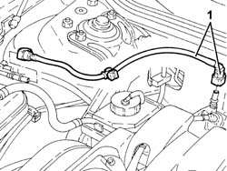
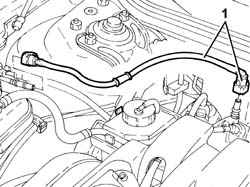

1080E61 Fuel vapour PIPE from VAPOUR FILTER to INTERMEDIATE COUPLING - R.R.
- Path
- Procedures > 10 ENGINE > 1080 EXHAUST EMISSION CONTROL SYSTEM > 1080E evaporation control system > 1080E61 Fuel vapour PIPE from VAPOUR FILTER to INTERMEDIATE COUPLING - R.R.
- Kind
- repair procedure (removal / refitting; the operation number is the code)
- Applies to
- engines: 1.6 TS, 2.0 TS; all production periods
- Interactive page
- https://sloeber94.github.io/elrnDB-a147/en/#/3024888
Applies to: engines: 1.6 TS; all production periods
 Removing
Removing
 Refitting
Refitting1. Disconnect the rapid attachments and remove the fuel vapour pipe from the active charcoal filter to the intermediate coupling.

Applies to: engines: 1.6 TS; all production periods
Refitting
RemovingPlace the fuel vapour pipe from the active charcoal filter to the intermediate coupling back in its housing and connect the rapid attachments.
Applies to: engines: 2.0 TS; all production periods
Removing
Refitting1. Disconnect the rapid attachments and remove the fuel vapour pipe from the active charcoal filter to the intermediate coupling.

Applies to: engines: 2.0 TS; all production periods
Refitting
RemovingPlace the fuel vapour pipe from the active charcoal filter to the intermediate coupling back in its housing and connector the rapid attachments.